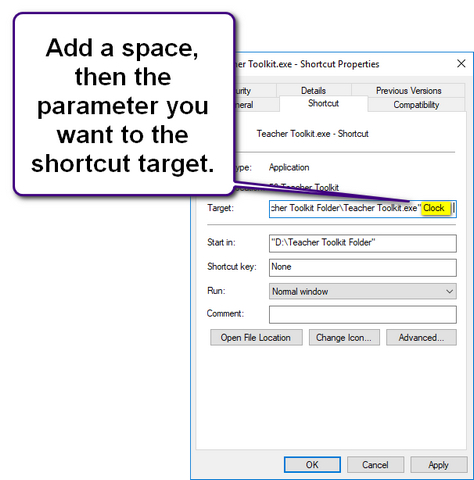

Run Parameters
You may find it useful to have the Teacher Toolkit automatically start one of its features, for example - when exam invigilators log on, the Teacher Toolkit can automatically launch the Exam Clock for them.
Do do this, add a parameter to the user's shortcut target:

The following parameters are available:
Teacher Toolkit.exe Clock
Will open with the Exam Clock
Teacher Toolkit.exe Lifebelt
Will start with Monitor Lifebelt ON
Teacher Toolkit.exe Load
Will open with the request to load a Pre-set Template
Teacher Toolkit.exe Structures
Will open with the Learning Structures